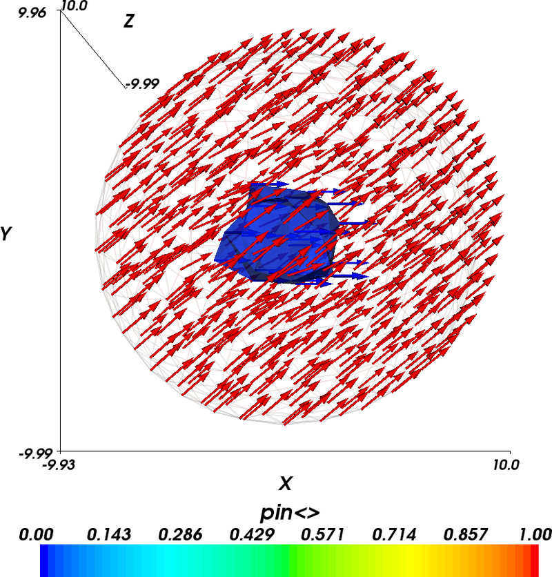
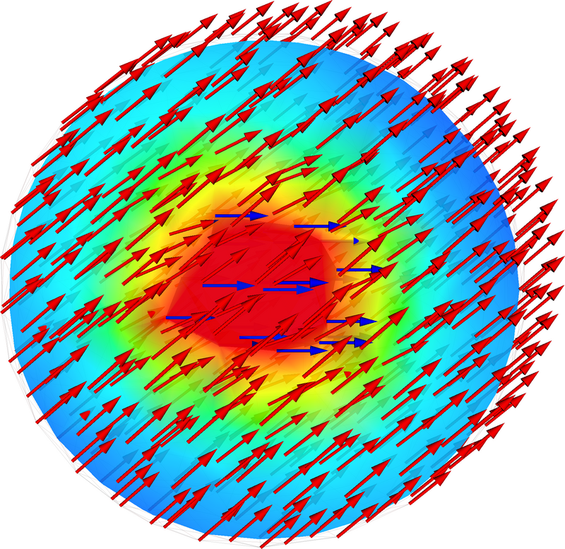

In this example we show how to pin (i.e. fix) magnetisation in certain parts of a material.
import nmag
from nmag import SI, si
# Create simulation object
sim = nmag.Simulation()
# Define magnetic material: PermAlloy
Py = nmag.MagMaterial(name="Py",
Ms=SI(0.86e6, "A/m"),
exchange_coupling=SI(13.0e-12, "J/m"))
# Load mesh
sim.load_mesh("sphere1.nmesh.h5", [("sphere", Py)], unit_length=SI(1e-9, "m"))
# Set initial magnetisation to +x direction
sim.set_m([1, 0, 0])
# Pin magnetisation at center in radius of 4e-9m
def pin_at_center((x, y, z)):
if (x*x + y*y + z*z) < (4e-9)*(4e-9):
return 0.0 # Inside the 4nm sphere -> pin
else:
return 1.0 # Outside -> do not pin
sim.set_pinning(pin_at_center)
# Apply external field in +y direction
unit = 0.5*si.Tesla/si.mu0 # 500mT in A/m
sim.set_H_ext([0*unit, 1*unit, 0*unit])
# Relax the magnetisation
sim.relax()
In order to allow the user to fix the magnetisation, nmag provides a scalar field, the so-called pinning field: its value at each site is used as a scale factor for dm/dt, hence by setting it to 0 at certain locations of the mesh we can force magnetisation to remain constant at these locations for the entire simulation.
We set the pinning field using set_pinning (which is used like set_m and set_H_ext, except that it is a scalar field whereas the latter are vector fields) such that magnetisation is fixed at sites with distance less than 4 nm from the sphere’s center. First we define a Python function which we decide to call pin_at_center:
def pin_at_center((x, y, z)):
if (x*x + y*y + z*z) < (4e-9)*(4e-9):
return 0.0
else:
return 1.0
The function is called for each site of the mesh and receives the site position as an argument, a 3-tuple (x, y, z) containing the three components x, y and z (three floating point numbers), given in metres. The function returns either 0.0 (which means the magnetisation at this position is pinned) or 1.0 (in which case there is no pinning), for the given position vector.
The formula in the if statement simply evaluates the magnitude of the vector (x, y, z) by squaring each component. This number is then compared against (4nm)^2. As a result, the magnetisation is pinned at all the mesh nodes that are located within a sphere with center (0, 0, 0) and radius 4 nm. All the nodes that are located outside this sphere can change their magnetisation as usual.
Second, we need to tell nmag that it should use this function to decide where the magnetisation should be pinned:
sim.set_pinning(pin_at_center)
Note the slightly counterintuitive fact that value 1 means “no pinning”.
Finally we apply an external field of 0.5 T in +y direction, and use relax to compute the equilibrium configuration.
The relax command:
sim.relax()
will save the fields and averages at convergence (this is the default of the relax command).
After running the example via nsim sphere.py we convert the equilibrium data to VTK format:
$ nmagpp --vtk=sphere.vtk sphere
We would first like to verify that the pinning field has been set up properly. Hence we use MayaVi to visualise it by showing an isosurface of the pinning field (shown in blue), together with the magnetisation vector field.
The blue blob in the center of the sphere is the collection of those tetrahedra that have corners just inside the 4nm sphere. Because we have not generated the mesh to have nodes coinciding with the 4nm sphere, the shape of the blue region is not particularly spherical.
In the above diagram, we also see the magnetisation vectors of the final configuration. Their colour corresponds to the pinning field at their location. It can be seen that the blue magnetisation vectors emerging from the central region of the sphere are all pointing (strictly) in the x-direction. The magnetisation vectors outside the blue sphere are coloured red. The applied field drives these vectors to point into the y-direction. However, the magnetisation in the centre is pinned and the exchange interaction requires a gradual spatial change of magnetisation. This explains the spatial variation of the magnetisation.
The next figure shows the same data as the last figure but in addition a ScalarCutPlane (in MayaVi terminology) has been introduced which is coloured according to the x-component of the magnetisation. Red corresponds to 1.0 and blue corresponds to 0.73 (we have not shown the legend to provide a larger main plot). This demonstrates the gradual change from the pinned magnetisation in the centre to the outside.
